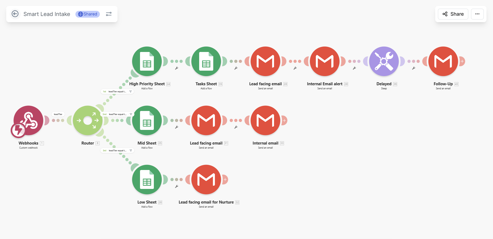
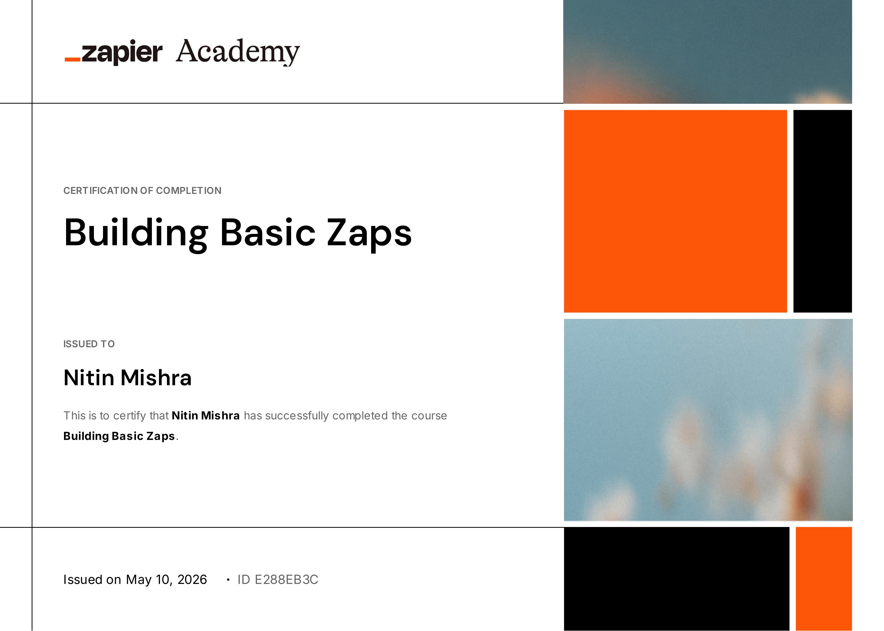

Operational Platforms
Automation & CRM Infrastructure

Operations & AI Workspace
Building lead movement, workflow operations, and lifecycle systems through structured CRM workflows and operational automation.
The hidden operational gaps that cause missed leads, broken handoffs, and silent revenue leakage.
A structured approach to building reliable revenue infrastructure and workflow continuity.
Implementing standardized intake layers across all digital touchpoints to eliminate data fragmentation and ensure entry-point reliability.
Architecting custom lifecycle stages and data schemas that mirror your physical operations for absolute pipeline visibility.
Engineering automated transition logic to move prospects through the funnel based on real-world engagement and system triggers.
Building logic-based distribution systems that prioritize high-intent leads for immediate response and ownership accountability.
Integrating automated scheduling and pre-qualification intake forms to reduce manual coordination and friction in the booking process.
Establishing automated persistence layers that ensure no prospect is abandoned during the long-tail sales or conversion cycle.
Real-world implementation of structured revenue infrastructure and automated logic.

Fully integrated operational workflow featuring HTML form intake, Make.com webhook triggers, lead-intent qualification, high/medium/low routing filters, and real-time CRM updates.
Captures incoming consultation requests, applies dynamic routing filters based on intent score, and triggers instant alerts to team owners for high-priority lead follow-ups.
A high-integrity, multi-stage pipeline framework designed for service enterprises. Currently under active development to standardize validation checkpoints and automate lifecycle triggers.
A unified metrics consolidation dashboard currently in development. Designed to compile webhook routing logs, pipeline velocity data, and conversion bottlenecks into a single visibility layer.
Automation triggers instant customized email confirmations to incoming high-intent prospects, initiating immediate response sequences and owner notifications.
A persistent multi-channel nurture framework currently undergoing strategic expansion. Engineered to automate follow-up cadences for inactive leads and capture secondary conversions.
A systematic implementation process showing how systems move from intake to structured execution.
Conducting a deep-dive audit of current manual touchpoints to map technical requirements and identify operational bottlenecks before build.
Designing the core data architecture and stage-based lifecycle schemas to ensure absolute pipeline visibility and tracking integrity.
Engineering the logic-based routing layers and automated transition systems using industry-standard platforms for hands-off execution.
Performing comprehensive system pressure tests and operational documentation handoff to ensure long-term stability and team adoption.
Expertise verified by platform implementation and structured professional development.

Workflow architecture and complex logic build exposure.

Operational logic and automated workflow connectivity (Zaps).

CRM architecture and automated pipeline implementation.

HubSpot email marketing software implementation and execution.
Strategic email campaign operations and lead engagement logic.
Email automation and audience segmentation operations.
Clarifying workflow structure, implementation approach, operational environments, and systems planning before execution begins.
I specialize in operational infrastructure, lead routing engines, CRM architecture, and multi-channel automation systems that bridge the gap between marketing activity and sales execution.
I work across both dimensions. I can build entire systems from scratch or perform targeted operational audits to refactor and harden your existing CRM and automation logic for better performance.
I primarily work within high-leverage ecosystems like Make, HubSpot, GoHighLevel, Zapier, and Airtable, focusing on building stable, scalable connections between your core operational tools.
Service-based businesses and consultancies that have reached a level of complexity where manual data entry and fragmented lead management are actively hindering growth and operational clarity.
I prioritize "architecture before tools." This involves a comprehensive audit of your current logic to identify redundant loops and decision points, mapping out the optimized flow before any automation layers are engineered.